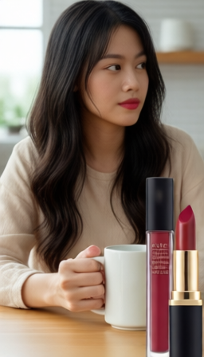

AdGen converts brief.json into executable video generation tasks.
The pipeline keeps structured JSON artifacts between planning, key-image generation,
video generation, and quality checks, so every stage can be inspected, replaced,
and rerun.
brief -> blueprintkey images -> video jobscritic feedback loop
1. brief.jsonUser input with product or subject details, selling points, and an optional product image.
2. ad_blueprint.jsonThe planner creates strategy, asset memory, and two executable hook/ad shots.
3. key image stageThe pipeline prepares I2V start frames and writes each start_key_image_path back.
4. video jobsEach shot is compiled into a provider-neutral image-to-video request.
5. video generationThe video backend generates clips, then the pipeline concatenates the final video.
6. criticA local Qwen-VL critic evaluates the result and either accepts it or routes a retry.
Result Browser
Current runs are grouped by ad type and product type. Category labels are experiment
priors for the GPT planner; video backends still receive concrete shot prompts from
ad_blueprint.json.
Ad type
Product type
Beauty / Hook
Lipstick transfer hook
hook clipbeauty
A short pain-point clip for the lipstick run: the user notices a visible mark
on a white mug before the product proof shot.
Vertical 9:16 one-take ad for Lipstick: prove A transfer-resistant lipstick that stays put on lips and keeps white cups clean through everyday sips. Same character and setting: Adult woman, early 30s, medium skin tone, polished look, calm and relatable; Ivory blouse with clean neckline; Smooth low bun; Soft studio/vanity setup. Start pain: Vertical close-up at a softly lit vanity. The woman holds a plain white ceramic mug near her lips, noticing a small lipstick mark on the rim. She slowly tilts the mug to present. Shift to proof without cuts or scene changes: Same setting and framing in a clean close-up. Her lips are neatly finished with a rich red matte lipstick. She gently sips from a clean plain white ceramic mug, then lowers it and rotates the rim toward the lens until the rim fills most of the frame, holding it steady to show. Keep one scene, one main subject, controlled camera, natural motion, stable face/hands/product, and sharp proof detail. No subtitles, UI, watermarks, fake logos, random text, extra characters, montage, split screen, or shaky camera.
Vertical 9:16 one-take ad for Apple iPhone: prove A premium smartphone that opens fast and captures sharp everyday moments in one tap. Same character and setting: Young adult in late 20s with medium skin tone, short dark hair, natural look; White crew-neck tee with a light gray cardigan and dark. Start pain: Vertical, locked-off medium-wide shot in a bright, minimalist living room. The young adult raises a matte black smartphone with the screen dark as a small tan dog springs up to catch a red plush. Shift to proof without cuts or scene changes: Vertical, locked-off close medium shot centered on the smartphone held in both hands at chest height. The camera preview is already open, framing the same small tan dog with a red plush ball in the bright living room. As the dog leaps, the user calmly taps a large white circular shutter button. Keep one scene, one main subject, controlled camera, natural motion, stable face/hands/product, and sharp proof detail. No subtitles, UI, watermarks, fake logos, random text, extra characters, montage, split screen, or shaky camera.
Vertical 9:16 one-take ad for Pan-Seared Steak: prove A richly seared steak with a browned crust and juicy, rosy center—restaurant-quality presentation and steam. Same character and setting: Single adult home-cook hand model with clean hands and short nails; Charcoal gray apron over a light neutral long-sleeve shirt; Hair off-camera; Cozy home. Start pain: Vertical close-up of a matte black cast-iron skillet on a home kitchen stovetop. A pale, lightly browned steak sits in the center with almost no crust. A right hand with matte stainless tongs gently. Shift to proof without cuts or scene changes: Same kitchen and angle style, now on the wooden butcher-block. A pan-seared steak with a deep mahogany crust rests on the board, steam rising, backlit by warm side light. The hand uses a matte-finish chef’s knife to slice the steak into thick, even slices, revealing a rosy, juicy center. The hand gently. Keep one scene, one main subject, controlled camera, natural motion, stable face/hands/product, and sharp proof detail. No subtitles, UI, watermarks, fake logos, random text, extra characters, montage, split screen, or shaky camera.
The longer combined result joins the hook clip with the product proof clip,
showing the clean-rim transfer-resistance claim.
Planner prior
Beauty commercial tone, consistent model and scene, macro proof that is easy to inspect.
Route
Key-image/ref2img planning path, then two generated clips concatenated.
No generated result in this slot yet.Software tools, food, fashion, electronics, and furniture runs will appear here as their artifacts are added.
Generation State Machine
The intended control flow is a state machine over artifacts. A successful critic result
ends the run. In V1, a failed critic result routes back to video_jobs.json
at most once, where the compiled video prompt is adjusted before the clip is regenerated.
PassAccept the generated clips and finish the run.
FailReturn to Stage 4 and adjust the compiled video prompt in video_jobs.json.
RetryRegenerate the failed clip from the same key image using the adjusted video job.
Plan and key-image risks are handled upstream in V1. The critic loop is intentionally
scoped to one video prompt adjustment and one video regeneration. Implemented entry point:
scripts/retry_video_from_critic.py.
Stage 1: brief.json -> ad_blueprint.json
The planner stage converts a compact user brief into an executable ad structure.
It does not generate media. Its output is a structured blueprint containing the
creative strategy, reusable asset memory, and per-clip execution prompts.
Input: brief.json
{
"product": {
"name": "Lipstick",
"image_path": "examples/lipstick/lipstick.png",
"selling_points": [
"Unlike ordinary lipsticks that leave marks on cups, this lipstick stays put, keeps cups clean, and resists smudging during daily wear."
]
}
}
Output: ad_blueprint.json
{
"ad_id": "lipstick_nocmarks_v1",
"brief": {
"product": {
"name": "Lipstick",
"image_path": "examples/lipstick/lipstick.png",
"selling_points": [
"Unlike ordinary lipsticks that leave marks on cups, this lipstick stays put, keeps cups clean, and resists smudging during daily wear."
]
},
"language": "en",
"duration_seconds": 11.0
},
"creative_strategy": {
"core_pain": "Wearing lipstick leaves embarrassing lip marks on cups...",
"promise": "A transfer-resistant lipstick that stays put on lips..."
},
"asset_memory": {
"character": "woman, beige top, consistent hair/makeup",
"scene": "bright home kitchen breakfast nook",
"product": "matte black lipstick case, red shade"
},
"executable_layer": {
"duration_seconds": 11.0,
"shots": [
{
"role": "hook",
"start_seconds": 0,
"end_seconds": 3,
"visual_prompt": "show the pain: lipstick mark on a white mug",
"start_key_image_prompt": "woman holds a mug with one red lipstick mark"
},
{
"role": "ad",
"start_seconds": 3,
"end_seconds": 11,
"visual_prompt": "show the proof: sip, then clean mug rim",
"start_key_image_prompt": "same woman, clean mug, lipstick product visible"
}
]
}
}
Downstream key-image and video stages consume this structured blueprint instead of
reading the raw brief directly.
Stage 2: ad_blueprint.json -> hook key image
The first key-image pass creates the identity reference frame. In the current V1 path,
FLUX only renders the hook start frame; later shot key images are handled by ref2img.
Input: ad_blueprint.json
{
"executable_layer": {
"shots": [
{
"role": "hook",
"start_key_image_prompt": "Vertical 9:16 frame, medium close-up at a light wood kitchen table. The woman (late 20s, medium skin, low bun, beige top) holds a plain white ceramic mug with one small red lipstick mark already on the rim facing the camera. Her other hand lightly supports the mug. Soft natural window light. Background is a clean white-tile backsplash and a small plant. Camera on tripod, steady. No product tube visible yet. The lipstick on her lips looks slightly worn, realistic."
},
{
"role": "ad",
"start_key_image_prompt": "Vertical 9:16 medium close-up in the same kitchen setup. The lipstick tube (matte black with metallic band) stands on the light wood table at frame right, label side facing camera per the product image. The woman (low bun, beige top) faces camera with fresh matte red lipstick applied cleanly. She holds a pristine, dry plain white ceramic mug near her mouth, rim clearly visible and spotless. Soft, even daylight; background consistent with white tile and small plant. Tripod shot, steady."
}
]
}
}
Stage 3: hook key image -> consistent ad key image
The ref2img stage uses the hook key image as the identity reference and generates the
ad start frame directly from the ad prompt. The ad draft image is not generated by default.
Reference: hook key imageOutput: consistent ad key image

Stage 4: ref2img blueprint -> video_jobs.json
The video job builder consumes the updated blueprint and compiles each shot into an
image-to-video request. At this point the video backend does not need to know whether a
start image came from FLUX or ref2img.
Stage 5: video_jobs.json -> clips + combined video
The generation stage executes each request in video_jobs.json. Each clip is
conditioned on its start key image and driven by the compiled video prompt. After hook and
ad clips are generated, the local pipeline concatenates them into a single video manifest
entry.
Input: video_jobs.json
{
"requests": [
{
"role": "hook",
"prompt": "Task: Show the customer pain for Lipstick: Wearing lipstick leaves embarrassing lip marks on cups...",
"start_image_path": "runs/lipstick_direct_ref2img/key_images/01_hook_start.png",
"duration_seconds": 3,
"fps": 24,
"size": "704*1280",
"output_path": "runs/lipstick_direct_ref2img/video/01_hook.mp4"
},
{
"role": "ad",
"prompt": "Task: Show the product proof for Lipstick: A transfer-resistant lipstick that stays put on lips...",
"start_image_path": "runs/lipstick_direct_ref2img/key_images/ref2img/02_ad_start_ref2img.png",
"duration_seconds": 8,
"fps": 24,
"size": "704*1280",
"output_path": "runs/lipstick_direct_ref2img/video/02_ad.mp4"
}
]
}
The latest ref2img run has been compiled to video_jobs.json; video clips have
not been re-rendered for that run yet. The media below shows the same final artifact shape
from the earlier lipstick_e2e run.
Previous run: hook clipPrevious run: ad clip
Previous run: combined video
Stage 6: generated clips -> critic_report.json
The critic stage evaluates generated clips against the compact checklist stored in
video_jobs.json. It uses a local Qwen-VL video critic to produce a structured
pass/fail report, observed issues, evidence, and retry suggestions.
Input: video_jobs.json + generated mp4 files
{
"clip": "runs/lipstick_direct_ref2img/video/02_ad.mp4",
"critic_expectation": {
"purpose": "Show the product proof for Lipstick...",
"must_show": [
"the woman takes a natural sip",
"the clean white mug rim is visible and easy to inspect",
"same recurring character, wardrobe, and kitchen scene"
],
"must_avoid": [
"unrequested subtitles, UI, fake logos, random text",
"warped hands, blurred proof detail, unstable camera"
]
}
}
Output: critic_report.json
{
"pass": false,
"clips": [
{
"role": "ad",
"pass": false,
"scores": {
"no_visible_text": 1.0,
"physical_plausibility": 1.0,
"prompt_alignment": 0.0,
"visual_quality": 1.0,
"intent_clarity": 0.0,
"safety_comfort": 1.0
},
"issues": [
"The proof action is missing or unclear."
],
"retry_suggestions": [
"Regenerate the ad clip with a clearer sip-and-clean-rim action."
]
}
]
}
PassAccept generated clips and end the run.
FailUse the critic issues and retry suggestions to adjust the video prompt in video_jobs.json.
RetryRegenerate the failed clip from the same start key image, then run the critic again.
A separate key-image critic also exists for multi-candidate key-image selection. In the
current simplified ref2img path, it is not part of the default main run. Video critic
failures are handled by scripts/retry_video_from_critic.py, which writes
video_jobs_retry_01.json with adjusted video prompts for failed clips and
rejects further retries by default.
{kind=link}
{kind=link}